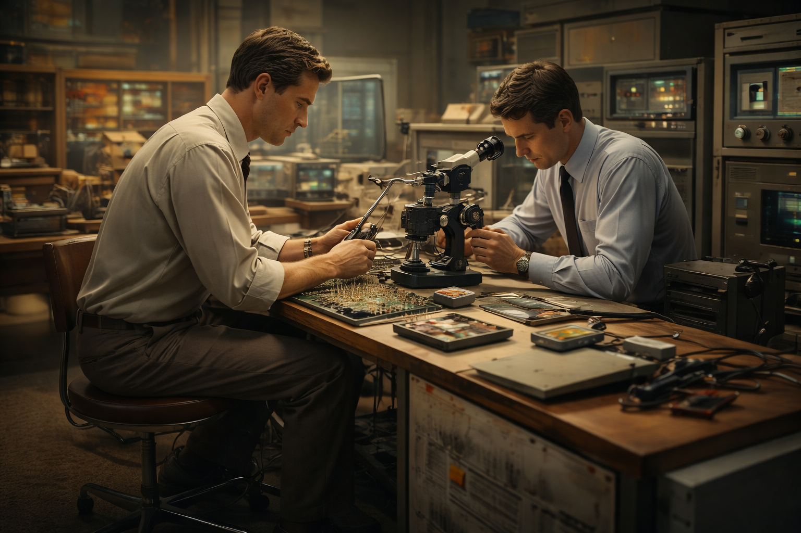
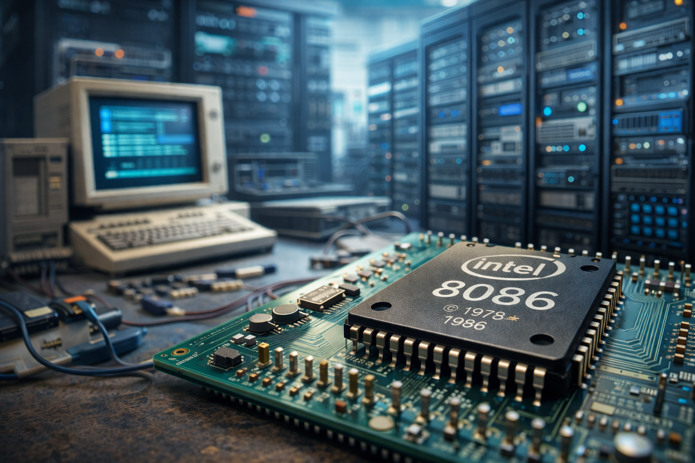
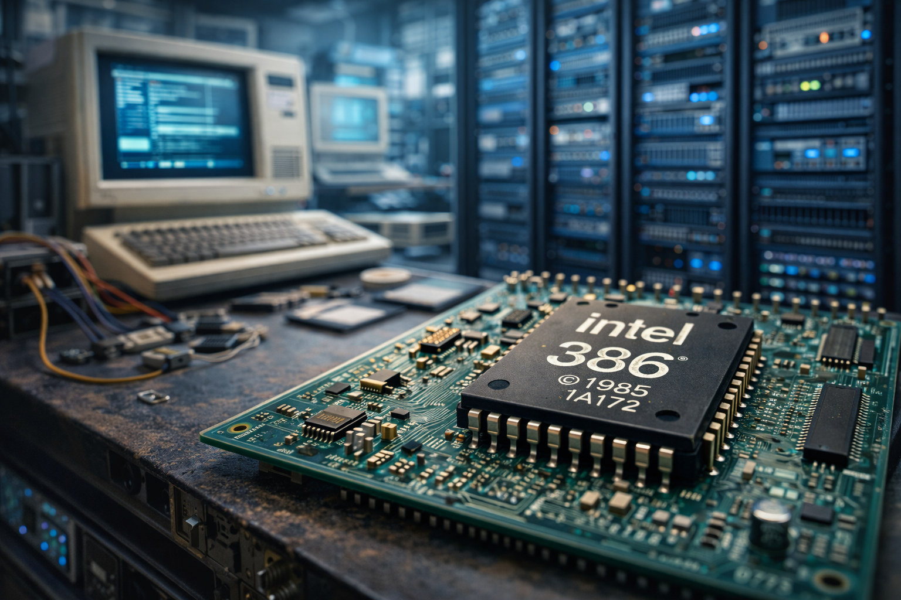
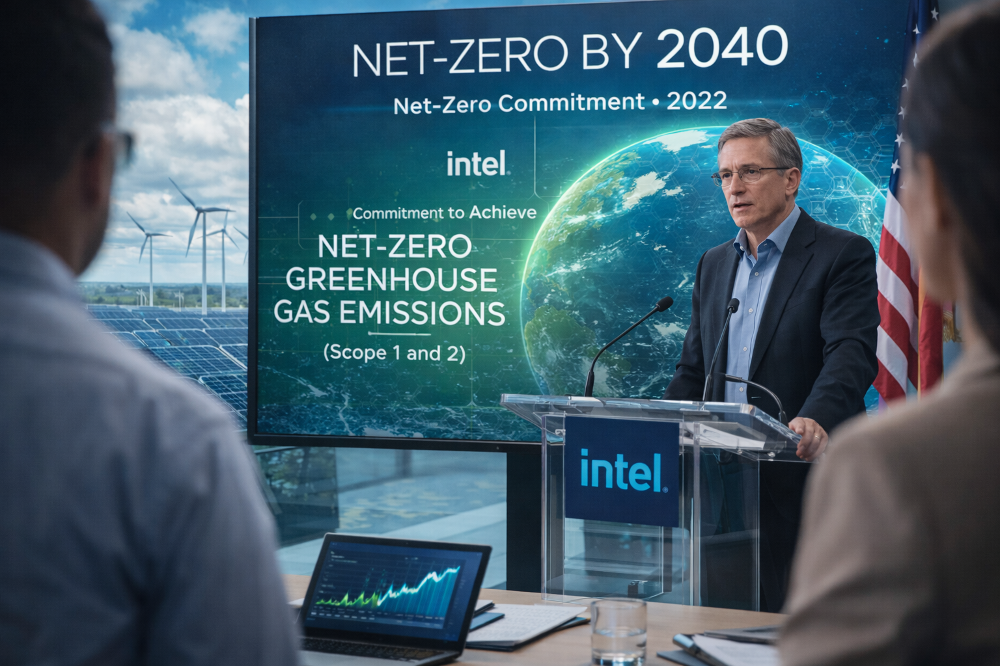
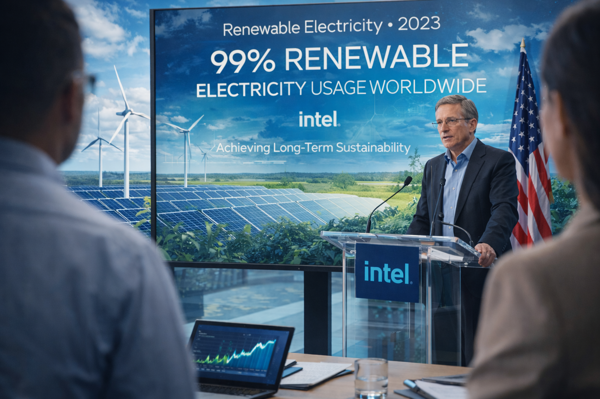
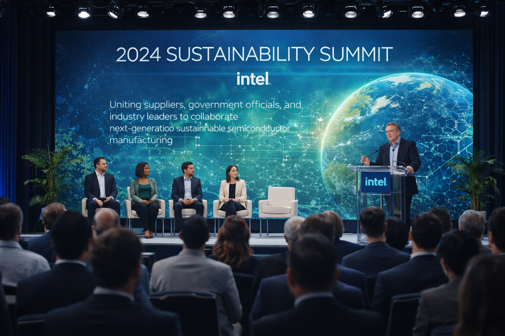

1968
Intel Founded

Robert Noyce and Gordon Moore rename the newly formed company NM Electronics to Intel Corporation, laying the foundation for decades of technological innovation.
- Founded in Mountain View, CA
- Early focus on memory chips
Hover or focus to learn more
1971
First Microprocessor
Intel debuts the 4004, the world's first commercial microprocessor, igniting the microprocessor revolution and propelling the future of computing devices.
- Launch of the 4004
- Enabled smaller, cheaper computers
Hover or focus to learn more
1978
8086 Processor

Launch of the 8086 processor, establishing the x86 architecture that drives countless PCs and servers in the modern era.
- x86 architecture introduced
- Widespread industry adoption
Hover or focus to learn more
1985
386 Processor

Intel introduces the 386 processor with 32-bit architecture, ushering in a new era of performance and multitasking for personal computers.
- 32-bit processing
- Improved multitasking
Hover or focus to learn more
2006
Peak GHG Emissions
This year marks Intel's highest annual greenhouse gas emissions for operations. Over subsequent years, Intel invests heavily in chemical abatement, renewable energy, and energy-efficient manufacturing to reverse this trend.
- Peak emissions year
- Start of significant remediation efforts
Hover or focus to learn more
2020
RISE Strategy
Intel launches its RISE (Responsible, Inclusive, Sustainable, Enabling) strategy and 2030 goals, aiming to drive industry-wide progress on climate action, water stewardship, and waste reduction.
- RISE strategy announced
- 2030 sustainability goals
Hover or focus to learn more
2022
Net-Zero By 2040

Intel announces its commitment to achieve net-zero greenhouse gas emissions (Scope 1 and 2) across its global operations by 2040, building on years of environmental initiatives.
- Net-zero commitment
- Operational decarbonization
Hover or focus to learn more
2023
Renewable Electricity

The company achieves 99% renewable electricity usage worldwide, helping to drastically lower carbon emissions and driving progress toward Intel's long-term sustainability goals.
- 99% renewable electricity
- Major emissions reductions
Hover or focus to learn more
2024
Sustainability Summit

Intel hosts its first Sustainability Summit, uniting suppliers, government officials, and industry leaders to collaborate on next-generation sustainable semiconductor manufacturing.
- Global summit held
- Cross-sector collaboration
Hover or focus to learn more